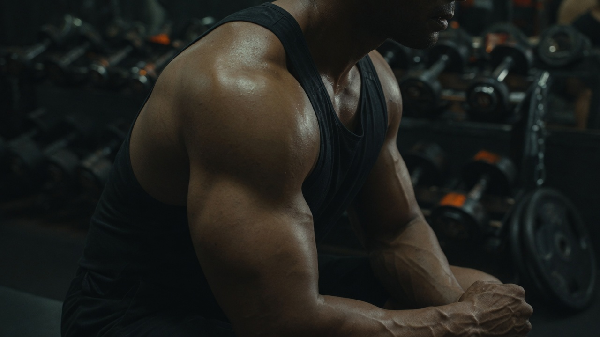
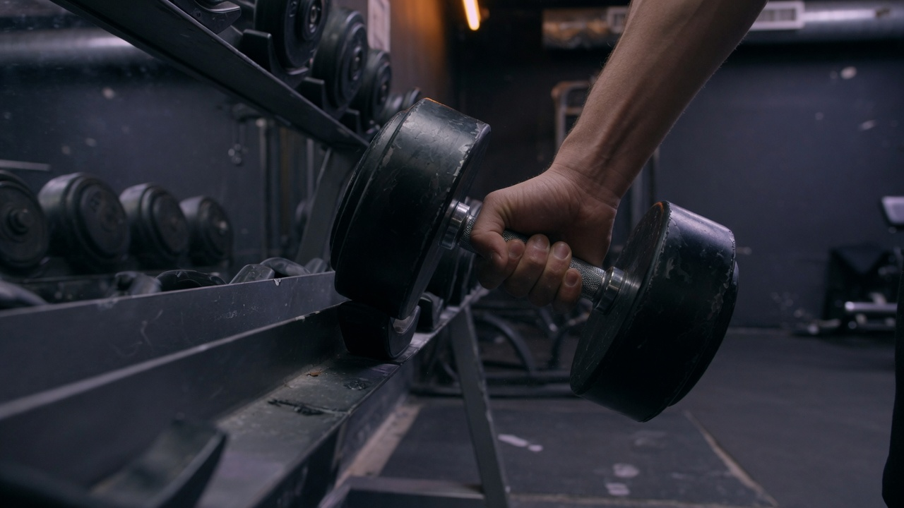
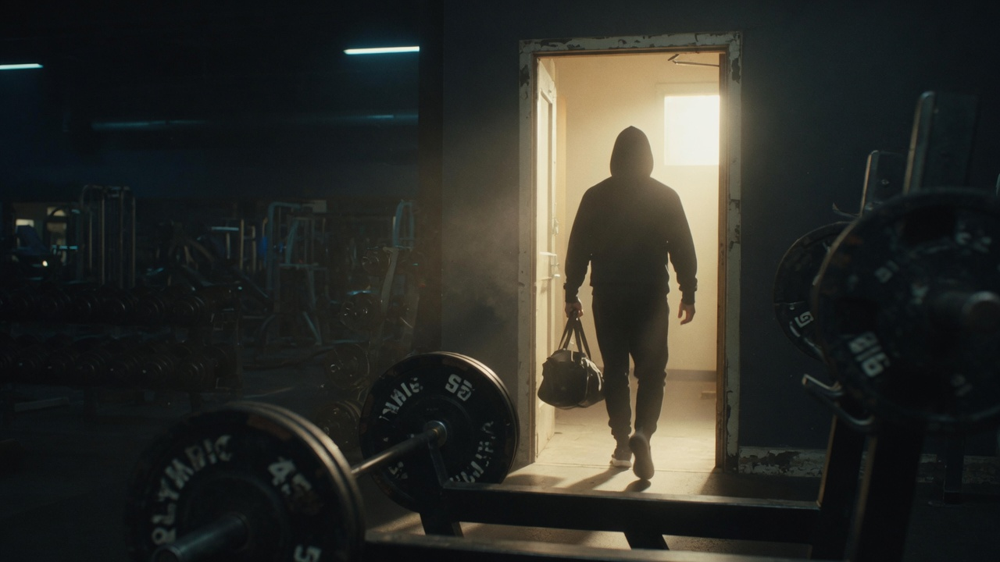

Muscle Soreness Is Not Proof of Progress
If soreness is your scoreboard, you are optimizing for the wrong variable — and a quiet gym week might still fit a smart plan.
Read moreTraining insights
Notes on strength coaching, physiology, and what sustainable progress actually looks like for busy adults — written from how I coach in Toronto, online, and hybrid formats.

If soreness is your scoreboard, you are optimizing for the wrong variable — and a quiet gym week might still fit a smart plan.
Read more
Full-time commitment does not demand living in the gym — here is how to think about a weekly dose that you can repeat for years.
Read more
Your tendon tolerance is not nostalgia. Practical ideas for rebuilding strength without re-injury or burnout.
Read moreClient stories
Longer write-ups with how I assess, program, and adjust — separate from the shorter blog articles above. Same coaching standards: movement first, traceable progression, scope with clinicians when needed.
28 · 5′10″ · 163 lb · Fortis · 12-week in-person foundation.
Read case study34 · 5′5″ · 146 lb · Fit Squad + online · 16 weeks.
Read case study41 · 6′0″ · 218 lb · online-first after a layoff · medical clearance.
Read case study